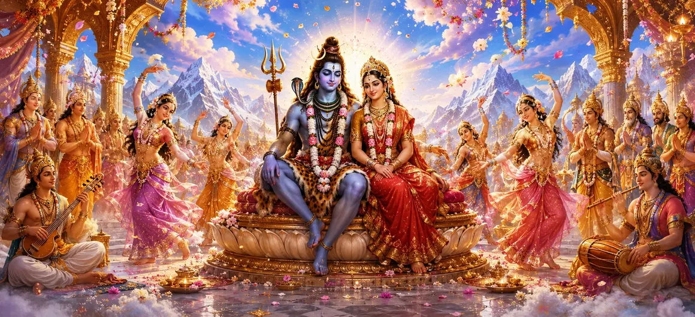

The sacred marriage of Lord Shiva and Goddess Pārvatī filled all the worlds with joy. The union of Shiva and Shakti was not merely a wedding but a cosmic event that restored harmony throughout creation. As the divine ceremony concluded, heavenly celebrations erupted across the celestial realms.
The gods were overwhelmed with happiness as they witnessed the successful union of Shiva and Pārvatī. Their long-standing hopes had been fulfilled, and they knew that this sacred marriage would ultimately lead to the destruction of evil forces threatening the universe.
The Gandharvas filled the heavens with melodious songs praising Lord Shiva and Goddess Pārvatī. Their divine music echoed through the celestial regions, glorifying the sacred union and inspiring devotion among all who listened.
The celestial apsaras performed graceful dances in honor of the divine couple. Their movements reflected joy, beauty, and reverence for the sacred marriage that united the cosmic principles of consciousness and energy.
As the celebrations continued, celestial flowers rained down from the heavens. The fragrant blossoms covered the wedding grounds, symbolizing divine approval and blessings upon the sacred union.
Great sages and seers offered heartfelt blessings to Shiva and Pārvatī. They praised the divine purpose behind the marriage and prayed for the welfare of all beings throughout the universe.
Sacred events bring joy to all worlds.
The triumph of righteousness is celebrated universally.
The union of Shiva and Shakti restores balance.
The entire universe rejoices when dharma is fulfilled.
The marriage of Shiva and Pārvatī symbolizes cosmic harmony.
The blessings of the Divine spread to all beings.
The celebrations were not confined to Kailāsa or the celestial realms. The joy of Shiva and Pārvatī's union spread throughout creation, inspiring sages, gods, and devotees alike with hope and spiritual enthusiasm.
When divine purposes are fulfilled, joy naturally spreads to everyone. The celebrations following Shiva and Pārvatī's marriage remind us that spiritual victories bring blessings not only to individuals but also to the wider world.
The gods felt immense relief and happiness, knowing that the divine union would soon lead to the birth of the mighty son destined to defeat Tārakāsura and restore balance to the worlds.
The celestial celebrations marked not an ending but a beginning. A new chapter in the divine story had begun, one that would soon unfold through even greater wonders and blessings.
"When the Divine rejoices, all creation joins in celebration."
The marriage of Shiva and Pārvatī has filled the worlds with celebration and joy. As the festivities continue, even the gods become immersed in wonder. Yet amid these divine celebrations, an unexpected event involving Brahmā will soon unfold. Continue to the next chapter to discover the story of The Delusion of Brahmā.